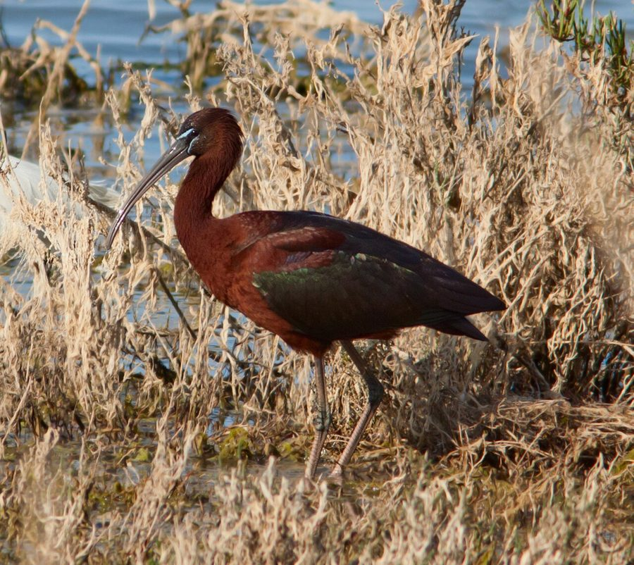

छोटा बुज़ाGlossy Ibis
Plegadis falcinellus · Threskiornithidae · BRD-0248

- Scientific name वैज्ञानिक नाम
- Plegadis falcinellus (Linnaeus, 1758)
- Family कुल
- Threskiornithidae
- Hindi हिंदी
- छोटा बुज़ा
- Local names स्थानीय नाम
- chhota buza, buza, glossy ibis, ibis
- Status here यहाँ की स्थिति
- native
- Movement आवागमन
- Resident; numbers rise with migrants
- Known from कहाँ दर्ज
- Others have published records from the Basti–Ayodhya districts बस्ती–अयोध्या के ज़िलों से दूसरों के प्रकाशित अभिलेख
- IUCN IUCN
- LC
- Review समीक्षा
- audited and independently read
When to look कब देखें
Present all year. साल भर मौजूद।
Partial migrant in the region; some populations winter (October–March), others resident year-round. Numbers increase in winter months. Ali & Ripley (1968) and Handbook field work document seasonal movements. All migrants and visitors →
Uses and possibilities उपयोग और संभावनाएँ
Drawn from the documented uses in the profile below, where each is labelled traditional, current or a research lead. All uses →
Tell it apart from इनसे अलग पहचानें
छोटा बुज़ा / Glossy Ibis
Plegadis falcinellus (Linnaeus, 1758) — Threskiornithidae
छोटा बुज़ा — यह एक मध्यम आकार की लंबी नुकीली चोंच वाली जलीय चिड़िया है जो पूर्वी उत्तर प्रदेश की नदियों, तालाबों और दलदली इलाकों में साल भर दिखती है, लेकिन सर्दियों में सबसे अधिक संख्या में मिलती है। इसकी गहरी चमकदार काली-भूरी पंखें, लंबी नुकीली चोंच और लंबी टाँगें इसे तुरंत पहचान देती हैं। यह झुंड में घूमता है और पानी में अपनी चोंच से कीचड़ को खोदकर खाना खोजता है।
Quick Identification त्वरित पहचान
| Feature | Description |
|---|---|
| Size | Medium wader; 48–66 cm long |
| Plumage | Dark glossy greenish-black overall; iridescent sheen in sunlight |
| Bill | Long, curved downward, blackish, pointed |
| Legs | Long, dark greenish-grey |
| Bare skin | Dark grey-green lores and around eye |
| Behaviour | Wades in shallow water; probes mud; gregarious |
| Call | Harsh calls and grunts |
Field tip: In marshes and wetlands, look for a dark glossy wader with a long downcurved bill, probing in mud or shallow water. Often in flocks. The curved bill immediately distinguishes it from herons or storks. In good light, the glossy iridescent sheen is visible.
हिंदी — कैसे पहचानें:
गहरी, चमकदार काली-भूरी चिड़िया।
बहुत लंबी, नुकीली, नीची झुकी हुई चोंच।
लंबी टाँगें।
पानी में मुँह डालकर खाना खोजता है।
झुंड में रहता है।
Morphology आकारिकी
Biometrics:
| Measurement | Range |
|---|---|
| Total length | 480–660 mm |
| Wing (flattened chord) | 260–290 mm |
| Tail | 100–120 mm |
| Bill | 120–155 mm (curved) |
| Tarsus | 80–100 mm |
| Weight | 485–1050 g |
Size: 48–66 cm long; wingspan 80–105 cm. Weight 485–1050 g, females smaller.
Plumage: Overall dark glossy greenish-black or dark brown, with iridescent sheen in good light. Head and neck slightly darker. Wings and back have brighter glossy-green iridescence. Rump glossy green. Underparts dark, sometimes with greenish gloss. Flight feathers dark. Tail dark.
Bill: Distinctive; long, slightly decurved, pointed, dark grey to blackish. Adapted for probing mud and shallow water.
Legs and feet: Long, dark greenish-grey; toes not webbed but with lateral lobes for mud-walking.
Eyes: Dark brown.
Bare skin: Lores and area around eye dark grey-green.
Sexual dimorphism: Females slightly smaller than males; plumage similar.
Juveniles: Browner; iridescent sheen less prominent; less glossy overall.
Non-breeding plumage: In winter, plumage becomes less glossy; head and neck show white streaking (in some birds).
Vocalisations. Call repertoire:
- Contact call: Harsh, guttural gahr-gahr-gahr or kaark, given in flight or at rest.
- Alarm call: Loud croaking notes when disturbed.
- Display call: Deep chuckling notes during courtship.
हिंदी: कठोर "गार-गार" आवाज़। झुंड में उड़ते समय बोलता है।
Behaviour & Ecology व्यवहार और पारिस्थितिकية
Omnivorous wetland forager: Glossy Ibis feed on a variety of aquatic prey:
- Aquatic invertebrates (aquatic insects, larvae, crustaceans, snails)
- Small fish and fish fry
- Amphibians (frogs, tadpoles)
- Earthworms
- Plant matter (seeds, roots, shoots)
Feeding behaviour: Wade in shallow water, probing mud with downcurved bill. Tactile feeders; locate prey by touch rather than sight. Feed both day and night in response to tide or water level changes.
Social behaviour: Highly gregarious; roost and feed in flocks of 10 to several hundred birds. Often mix with other ibis species and waders.
Flight: Strong, direct flight with regular wingbeats; flocks fly in V-formation at migration.
Predators: Large eagles, storks (occasionally); crow predation on chicks.
हिंदी: झुंड में रहता है। पानी में चोंच डालकर खाना खोजता है। सर्दियों में संख्या बढ़ती है।
Life Cycle / Phenology जीवन चक्र
Partial migrant: Some populations resident year-round; others migrate, arriving in October–November and departing by April–May.
Breeding: In India, breeds during monsoon (June–August), building stick nests in reed beds, trees, or bushes. Eastern UP birds may breed locally or migrate to breeding grounds elsewhere.
Non-breeding: Winter populations higher than breeding populations; flocks gather in large wetlands for feeding and roosting.
Moult: Gradual pre-breeding moult; less obvious eclipse plumage than some species.
हिंदी: साल भर रह सकता है लेकिन सर्दियों में सबसे ज़्यादा दिखता है। बारिश में अंडे देता है। झुंड में रहता है।
Host Plants or Prey आहार
| Prey Type | Examples | Feeding Behaviour |
|---|---|---|
| Aquatic invertebrates | Aquatic insect larvae, freshwater shrimp, snails | Probe mud while wading |
| Small fish | Fish fry, small native fish species | Peck from water |
| Amphibians | Tadpoles, small frogs | Probe mud and shallow water |
| Earthworms | Various species | Extracted from wet soil |
| Plant matter | Seeds, reed shoots, water plant roots | Occasionally taken |
हिंदी: पानी के जानवर खाता है — कीड़े, मेंढक, मछली, केंचुए।
Predators / Natural Enemies शत्रु
- Avian predators: Large eagles, storks
- At nest: Crows, snakes
- Parasites: Avian helminths, ectoparasites
हिंदी: बड़ी शिकारी चिड़ियाँ इसका शिकार करती हैं। अंडों को कौवे और साँपें खा जाते हैं।
Agricultural / Human Relevance कृषि प्रासंगिकता
Wetland health indicator: Presence indicates healthy wetland ecosystems with rich invertebrate fauna.
Pest control: Feeds on aquatic insect larvae (including mosquito pupae), providing indirect disease control benefits.
Fishing and rice paddy impact: May occasionally feed in shallow rice paddies; generally not a significant pest species.
Protected status: Protected under the Wildlife (Protection) Act 1972. Hunting and trade are prohibited.
Cultural significance: Known locally as "buza" or "chhota buza"; a traditional target for hunting in some regions (now prohibited).
हिंदी: यह विधि अधिनियम 1972 के अंतर्गत संरक्षित है। पानी के स्वास्थ्य का सूचक है।
Expected Locally स्थानीय रूप से अपेक्षित
Not a field record. Written from published accounts for eastern Uttar Pradesh. No confirmed local sighting yet — if you have seen it, that is what the atlas needs.
अभी तक स्थानीय पुष्टि नहीं। यह विवरण प्रकाशित स्रोतों से है, किसी अवलोकन से नहीं।
This species is NOT a field record. The distribution below is based on published sources describing where Glossy Ibis should be looked for in the Basti–Ayodhya region.
Distribution range: Expected in eastern Uttar Pradesh year-round in suitable wetlands, with higher densities October to March when wintering or migratory populations augment residents.
Habitat preference: Marshes, lake margins, river floodplains, and shallow water bodies with exposed mud or shallow water for feeding.
Peak occurrence: October–February, when visiting populations are present.
GBIF records: GBIF holds published records from these districts in the core region.
What a first record would be: A dated photograph showing the bird clearly in a specific location (with GPS coordinates and date) submitted through the About page of this atlas.
हिंदी: यह पक्षी स्थानीय रूप से अपेक्षित है, न कि देखे गए बतौर प्रेक्षण। नदियों, तालाबों और दलदली इलाकों में साल भर या सर्दियों में दिखता है। पहला रिकॉर्ड के लिए स्पष्ट फोटोग्राफ और तारीख चाहिए।
Distribution वितरण
Global range: Widespread across the Old World from Europe to Australia; one of the most cosmopolitan of all ibis species.
In India: Distributed throughout India in suitable wetlands; partial migrant with more birds in winter.
In Uttar Pradesh: Widespread in marshes and wetlands throughout the state; more common in winter months.
In Basti district / eastern UP: Regular year-round resident with increased numbers October to March; found in floodplain marshes and wetlands along major river systems.
Research Questions शोध प्रश्न
- What is the population size and trend of Glossy Ibis in eastern UP, and from where do wintering birds migrate?
- How does seasonal movement (migration vs. residency) relate to local water levels, food availability, and habitat changes?
- What is the dietary composition throughout the year, and how does diet change with seasonal availability of aquatic fauna?
- क्या धान की खेती के तरीकों में बदलाव से इस पक्षी की संख्या प्रभावित होती है?
- How do Glossy Ibis flocks organize foraging activities, and what determines flock size and composition? (A child can observe and map flock sizes and locations.)
- क्या जलाशयों के पानी के प्रबंधन से इस चिड़िया की उपस्थिति में परिवर्तन आता है?
Similar Species मिलती-जुलती प्रजातियाँ
| Species | Key Difference | Hindi | Field Rule | |
|---|---|---|---|---|
| [[black_headed_ibis\ | Black-headed Ibis]] (Threskiornis melanocephalus) | Larger (68–76 cm); black head and neck; white body; straight bill | बड़ा बुज़ा | Black-headed Ibis is larger with contrasting black head and white body. |
| [[asian_openbill\ | Asian Openbill]] (Anastomus oscitans) | Similar size; distinctive gap in bill; lighter coloration | खुली चोंच वाली | Asian Openbill has a distinctive gap in the middle of the bill; Glossy Ibis has a normal pointed bill. |
Field rule: Glossy Ibis is a dark glossy-black ibis with a downcurved bill, often in flocks in wetlands. Its dark plumage, glossy sheen, and curved bill immediately distinguish it from lighter ibis species. The long legs and feeding behaviour (probing mud) are characteristic.
Taxonomy & Classification वर्गीकरण
Original description. The species was described by Carl Linnaeus in 1758 in the Systema Naturae (10th edition) as Tantalus falcinellus. Type locality is "India" (vague; likely Bengal).
Subspecies. Three subspecies are recognized: P. f. falcinellus (Linnaeus, 1758) occurs from southern Europe to western Asia and India.
Family and order placement. Order Pelecaniformes; family Threskiornithidae (ibises and spoonbills). The genus Plegadis contains dark glossy ibises.
Phylogenetic notes. Glossy Ibis is closely related to White-faced Ibis of the Americas and other Plegadis species. Molecular studies confirm its position within the ibis family.
IUCN status rationale. The species is assessed as Least Concern (LC). Populations are stable and widely distributed across the Old World. Adaptable to human-modified wetlands.
हिंदी: यह विश्वभर में पाया जाता है। भारत में साल भर रह सकता है। आमतौर पर सुरक्षित है।
Photo Gallery फोटो गैलरी
No photos yet — add field photos to media/species/glossy_ibis/ and run node scripts/sync_photos.js.
Wanted photos:
- Flock in flight
- Feeding posture, probing mud
- Roosting on water
- Close-up of head and curved bill
- Wading in shallow water
References संदर्भ
- Linnaeus, C. (1758). Systema Naturae per Regna Tria Naturae (10th edn). Laurentii Salvii, Holmiae. Vol. 1, p. 142.
- Ali, S. & Ripley, S. D. (1968). Handbook of the Birds of India and Pakistan. Vol. 1 (Divers to Hawks). Oxford University Press, Delhi. Pp. 30–33.
- Cramp, S. & Simmons, K. E. L. (1977). Handbook of the Birds of Europe, the Middle East and North Africa: The Birds of the Western Palearctic. Vol. 1 (Ostrich to Ducks). Oxford University Press. Pp. 544–558.
- Rasmussen, P. C. & Anderton, J. C. (2005). Birds of South Asia: The Ripley Guide. Vol. 2. Smithsonian Institution Press, Washington, DC. Pp. 20–21.
- GBIF Occurrence Data — Plegadis falcinellus, India.
- IUCN Red List (2023). Plegadis falcinellus — BirdLife International assessment. IUCN, Cambridge. Status: Least Concern.
Source file: species/fauna/birds/glossy_ibis.md